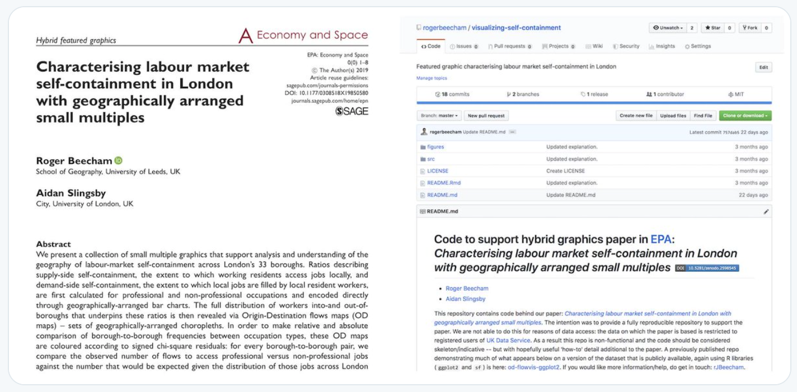

Visualization for exploring spatial networks: Containment and connection
Contents
By the end of this session you should gain the following knowledge:
- The special structure and vocabulary used to represent network data.
- The strengths, weaknesses and trade-offs of network visualizations and of incorporating geographic context.
By the end of this session you should gain the following practical skills:
- Write
ggplot2specifications that use containment to analyse spatial network origin-destination data.
Introduction
Networks are a special class of data used to represent things (entities) and how they relate to one another. Network data consist of two types of element: nodes, the entities themselves, and edges, the connections between nodes. Both nodes and edges can have additional information attached to them – counts, categories and directions. Network data are cumbersome to work with in R as they are not represented well by flat data frames. This is being improved by packages like tidygraph, but a common workflow is to split the data across two tables – one representing nodes and one representing edges (Wickham, Navarro, and Lin Pedersen 2020).
A category of network data used heavily in geospatial analysis is origin-destination (OD) data describing, for example, flows of bikes (Beecham and Wood 2014) and commuters (Beecham and Slingsby 2019) around a city, or water around a country. These data consist of nodes, origin and destination locations, and edges, flows linking those origins and destinations. Whilst statistics common to Network Science can and have been deployed in the analysis of geospatial OD data, visualization techniques provide much assistance in exposing the types of complex structural patterns and relations that result from locating OD flow data within geographic context.
In this session we will work with an accessible and widely used origin-destination network dataset: 2011 Census travel-to-work data. This records counts of individuals commuting between locations (census geographies) of the UK by travel mode, occupation, sex and age.
Read this short blog post describing some of the challenges of visually analysing OD data, and which introduces some of the techniques used in this session.
Next read this twitter thread demonstrating how these techniques can be deployed in a data analysis. 
Concepts
Network data: nodes and edges
This session introduces techniques for visually representing networks and evaluates their usefulness through an analysis of 2011 Census OD travel-to-work data. We will focus on travel-to-work data in London – the nodes in this dataset are London’s 33 boroughs and the edges are directed OD pairs between these boroughs.
| borough | out | in |
|---|---|---|
| Barking and Dagenham | 54237 | 33605 |
| Barnet | 117657 | 72024 |
| Bexley | 77263 | 39232 |
| … | … | … |
| origin | destination | freq |
|---|---|---|
| Barking and Dagenham | Barking and Dagenham | 14650 |
| Barking and Dagenham | Barnet | 280 |
| Barking and Dagenham | Bexley | 155 |
| … | … | … |
In Figure 1, frequencies of flows into- and out-of London boroughs (the nodes) are represented. Note that job-rich boroughs in central London – Westminster, City of London, Camden, Tower Hamlets – contain many more workers commuting-in for work than residents commuting out for work.
Figure 1: Barchart of commutes in- and out- of London boroughs.
A map below (Figure 2) to help read the abbreviated labels for London boroughs and the semi-spatial orderings used in this session.
Figure 2: Relaxed geospatial layout of London boroughs.
Node-link representations
The most common examples of network visualization that we could use to represent the data in Tables 1 and 2 are node-link diagrams. These depict graphs in two dimensions as a force-directed layout. Nodes are positioned such that those sharing greater connection – edges with greater weights (frequencies) – are closer than those that are less well-connected – that do not share edges with such large weights. Edges are drawn as lines connecting nodes.
Figure 1 uses a force-directed layout to represent the travel-to-work data as such a network graph. This shows large numbers of flows between job rich boroughs (particularly Westminster) and boroughs containing large resident populations: Wandsworth, Lambeth, Southwark (close to central London), Barnet, Brent, Haringey (further from central London). Note that although no geographic positioning is used, the layout suggests geographic dependency in the relations between nodes, and so the manner by which populations commute between boroughs for work. For example, Hillingdon (HDN), Hounslow (HNS) and Ealing (ELG) in the bottom left; Redbridge (RDB) and Walthamstow (WTH) in the bottom middle/right.
Figure 3: Node-link layout of commutes between London boroughs.
If the aim is to compare relative frequencies of flows and locate them in geographic context – to understand both the distribution and geography of travel-to-work in London, then we can make better use of position. In Figure 4, nodes (boroughs) are placed in their exact geographic position (geometric centroid of boroughs), and line width and transparency is used to encode flow frequency. In the plot on the bottom row, flow direction is encoded by making flow lines asymmetric (following Wood, Slingsby, and Dykes 2011): the straight ends are origins, the curved ends destinations.
Figure 4: Straight line showing commutes between London boroughs in spatial position; asymmetric lines encode direction.
The geophraphic positioning of nodes adds context and the encoding of direction provides further detail around, for example, the pattern of commuting into central London boroughs versus more peripheral boroughs (asymmetric flows into Westminster, more symmetric pattern between outer London boroughs like Brent and Enfield). However, there are problems that affect the usefulness of the graphic:
- Flows that start and end at the same location are not shown;
- Longer flows are more visually dominant than are shorter flows;
- The graphic is cluttered with a ‘hairball’ effect due to multiple overlapping lines;
- Aggregating to the somewhat arbitrary geometric centre of boroughs and drawing lines between these locations implies an undue level of spatial precision.
Matrix representations
An alternative way to represent these edge frequencies is origin-destination matrices, as in Figure 5. The columns are destinations, London boroughs to which residents commute for work; the rows are origins, London boroughs from which residents commute out for work. Edge frequencies are encoded using colour value – the darker the colour, the larger the number of commutes between those boroughs. Boroughs are ordered left-to-right and top-to-bottom according to the total number of jobs accessed in each borough.
Whilst using colour rather than line width to show flow magnitude is a less effective encoding channel (following Munzner 2014), there are obvious advantages. The salience bias of longer flows is removed. Ordering cells of the matrix by destination size (number of jobs accessed in each borough) helps to emphasise patterns in the job-rich boroughs, but also encourages within and between borough comparison. For example, the lack of colour outside of the diagonals in the less job-rich boroughs, which also tend to be in outer London, suggests that labour markets there might be more self-contained: that is, people are less likely to commute-in from outside of those boroughs for work. The layout also supports ‘look-up’ type tasks – for example in the top-right plot, where the same OD commutes are removed, we can efficiently identify the boroughs importing the second (WNS) and third (LAM) largest number of workers to Westminster. By applying a local scaling on destination (bottom plot), whereby a separate colour scale is created for each destination borough, we can explore the theme of self-containment more directly. The vertical blue bars for Hammersmith and Kingston suggest that there are comparatively large numbers commuting into- these boroughs for work, especially given their size in terms of available jobs.
Figure 5: OD matrices showing commutes between London boroughs.
OD maps
The OD matrices expose new structure that could not be so easily inferred from the (more flashy) network visualizations. Although their layout is space-efficient, clearly for phenomena such as commuting, geographic context is highly relevant. It is possible to make better use of layout and position to support the spatial dimension of analysis. OD Maps were proposed by Wood, Dykes, and Slingsby (2010) as a means of supporting such an analysis. They take a little to get your head around, but the idea is very elegant.
You will recall that we previously used the LondondSquared grid layout, also in Figure 2, for arranging London boroughs of regular size and shape. The cells of each column or row of the matrix could also be re-ordered according to this geographic layout, as in Figure 6. So, for example, we may be interested in focussing on destination, or workplace, boroughs. In the first highlighted example, commutes into Westminster are considered (the left-most column). Cells in the highlighted column are coloured according to the number of workers resident in each borough that travel into Westminster for work. These cells are then re-ordered spatially, as in the inset map for Westminster in the figure. The geographic ordering allows us to see that residents access jobs in Westminster in large numbers from many boroughs in London, but especially so from Wandsworth, Lambeth and Southwark immediately to the south of Westminster (see real geography in Figure 2). In the second example, we focus on origins: commutes out of Hackney are considered (the middle row). Cells in the highlighted row are coloured according to the number of jobs accessed in each borough by residents travelling out of Hackney for work. Cells are again reordered in the inset map. This demonstrates that patterns of commuting are reasonably localised. The modal destination/workplace borough remains Westminster, but relatively large numbers of jobs are accessed in Camden, Islington, Tower Hamlets and the City of London.
Figure 6: Highlighted columns (destinations/workplaces) and rows (origins/homeplaces) of the OD matrix with a spatial arrangement.
OD maps extend this idea by displaying all cells of the OD matrix with a geographic arrangement. This is achieved via a “map-within-map” layout. In the destination-focussed example in Figure 7, each larger (reference) cell identifies destinations and the smaller cells are coloured according to origins – the number of residents in each borough commuting into the reference cell for work.
Figure 7: Destination-focussed OD map of commutes between London boroughs
The first map uses a global colour scaling and the second a local colour scaling. Ordering cells geographically helps better appreciate this distinction. As demonstrated in Figure 1, Westminster contains a large portion of jobs filled by London residents. It makes sense then that, outside of the reference cells (residents living and working in the same borough), the darkest colours corresponding with the largest flow counts are in the map where Westminster is the reference cell. Due to this dominant pattern, however, it is difficult to read too much into the patterns of commuting outside of Westminster. This is where a local scaling is useful. Flow counts are summarised over each reference borough (destination in this case) and each is normalised according to the maximum flow count for that reference borough. Most often this maximum flow count (darkest blue) is the reference cell – residents living and working in the same borough. The City of London, which contains many jobs but few residents, is the obvious exception.
The local scaling allows us to characterise the geography of commuting into boroughs in reasonable detail. The two job-rich boroughs – Westminster and City of London – clearly draw workers in large proportions across London boroughs and to a lesser extent this is the case for other central/inner boroughs such as Islington (ISL), Camden (CMD), Kingston (KNS). For many outer London boroughs, commuting patterns are very localised – large numbers of available jobs are filled by workers living in those boroughs or immediately neighbouring boroughs. Notice that for inner London boroughs south of the river – Lambeth (LAM), Wandsworth (WNS), Southwark (SWR) – they tend to draw workers in greater number from neighbouring boroughs that are also south of the river. There is more to unpack here. In the Technical element to the class and Homework you will consider how this geography of travel-to-work varies by travel mode.
The analysis above might give the impression that OD maps should be used in preference of spatially arranged node-link diagrams. As always, this depends on dataset and analysis task. In Figure 8 is a map displaying bikeshare flow data for the London Cycle Hire Scheme (LCHS), collected via the bikedata package. The LCHS consists of c.700 docking stations in London – so c. 700^2 grid cells if the grid-within-grid layout of an OD map were to be used – challenging, although possible (see Wood, Slingsby, and Dykes 2011). If a synoptic overview of spatial patterns is necessary, the more intuitive node-line representation is perhaps more successful than the OD map. Additionally, different from the commuter dataset, there is geographic precision in the spatial coordinates representing origins and destinations in the bikeshare dataset, and distance judgements seem important when exploring cycling trips – an argument against the spatial distortion required by OD maps.
In the graphic below, I’ve filtered on trips that take place in the morning peak. The dominant pattern is of flows from London’s main commuter rail terminals – King’s Cross and Waterloo – to central London and City of London respectively. The asymmetric bezier curves efficiently communicate this and the reverse pattern when trips in the evening peak are filtered.
Figure 8: Flow map of London Cycle Hire Scheme trips in the weakday morning peak. Data by TfL, accessed via bikedata; parks and river outline via OSM.
Techniques
The technical element to this session continues in our analysis of 2011 Census travel-to-work data. After importing the dataset, you will organise the flow data into nodes and edges. You will then create graphics that summarise over the nodes (London boroughs in this case) and reveal spatial structure in the edges (OD flows between boroughs). You will focus on how the geography of travel-to-work varies by travel mode.
- Download the 05-template.Rmd file for this session and save it to the
reportsfolder of yourvis-for-gdsproject. - Open your
vis-for-gdsproject in RStudio and load the template file by clickingFile>Open File ...>reports/05-template.Rmd.
Import
The template file lists the required packages: tidyverse, sf and also the pct package for downloading the 2011 Census travel-to-work data.
Using pct’s get_od function, a .csv file of travel-to-work data between Middle-Layer Super Output Areas (MSOA) can be dowloaded. The default dataset is WU03UK, location of usual residence and place of work by method of travel to work. When downloading, you will limit to London using the region argument in get_od. This will take a few seconds to execute.
# Import OD by travel mode from 2011 Census.
od_pairs <- get_od(
region = "london",
type = "within",
omit_intrazonal = FALSE,
base_url = paste0("https://s3-eu-west-1.amazonaws.com/",
"statistics.digitalresources.jisc.ac.uk", "/dkan/files/FLOW/"),
filename = "wu03ew_v2"
)
# Import .geojson file with geometry data for LondonSquared and real layout of London boroughs.
london_grid_real <- st_read("https://www.roger-beecham.com/datasets/london_grid_real.geojson")The downloaded data have the following structure:
| geo_code1 | geo_code2 | all | train | bus | …cont | la_1 | la_2 |
|---|---|---|---|---|---|---|---|
| EO2000001 | EO2000014 | 3 | 1 | 0 | … | City of London | City of London |
| EO2000001 | EO2000016 | 1 | 0 | 1 | … | City of London | Barking and Dagenham |
| … | … | … | … | … | … | … | … |
| origin msoa | dest msoa | count | count | count | … | origin bor | dest bor |
In the template file is code for aggregating these MSOA data to borough level to derive tables representing nodes and edges.
First, we ensure that only commutes made by London residents between London boroughs are recorded and so we generate a look-up of London boroughs. When installing and loading the pct package, a table matching Local Authorities with Regions (pct_regions_lookup) was made available. We filter this on region_name to extract a list of all local authorities (lad16nm), London boroughs in this case, and store them as a vector using pull(). This vector of London borough names (london_las) is used to filter() the raw od_pairs data frame.
# Look-up of London boroughs.
london_las <- pct_regions_lookup %>% filter(region_name=="london") %>%
pull(lad16nm)To generate an edges table, od_pairs is grouped by the origin and destination borough (la_1, la_2) and flow counts are summed for each unique borough-borough OD pair. Note that we use dplyr’s across() function to summarise over the multiple travel mode columns. Our analysis focuses on trips made by public_transport, car, and active transport (foot+bike) and so we generate new combined mode counts merging travel modes and also dropping those we do not wish to use, using transmute(). The edges table, an OD dataset summarising commute counts between boroughs, contains 1089 rows (33^2 borough-borough commutes).
edges <- od_pairs %>%
# Filter only *within* London.
filter(la_1 %in% london_las, la_2 %in% london_las) %>%
group_by(la_1, la_2) %>%
summarise(
across(c(all:other), sum)
) %>%
ungroup %>%
transmute(
o_bor=la_1, d_bor=la_2, all=all, public_transport=train+bus+light_rail,
car=car_driver+car_passenger, active=bicycle+foot
)| o_bor | d_bor | all | public_transport | car | active |
|---|---|---|---|---|---|
| Barking and Dagenham | Barnet | 280 | 143 | 131 | 2 |
| Barking and Dagenham | Bexley | 155 | 41 | 109 | 2 |
| … | … | … | … | … | … |
| origin bor | dest bor | count | count | count | count |
Nodes in the dataset are the 33 London boroughs. We can express the 2.9m commutes between these nodes in different ways – according to whether nodes are destinations or origins. In the code below, two tables are generated with OD data grouped by destination (nodes_d) and origin (nodes_o) and commutes into- and out of- boroughs counted respectively. These two data sets are then joined with bind_rows() and distinguished via the variable name type.
# Summarise over destinations: commutes into- boroughs.
nodes_d <- od_pairs %>%
# Filter only *within* London.
filter(la_1 %in% london_las, la_2 %in% london_las) %>%
group_by(la_2) %>%
summarise(
across(c(all:other), sum)
) %>%
ungroup %>%
rename(bor = la_2) %>%
transmute(
bor=bor, type="destination", all=all, public_transport=train+bus+light_rail,
car=car_driver+car_passenger, active=bicycle+foot
)
nodes_o <- od_pairs %>%
# Filter only *within* London.
filter(la_1 %in% london_las, la_2 %in% london_las) %>%
group_by(la_1) %>%
summarise(
across(c(all:other), sum)
) %>%
ungroup %>%
rename(bor = la_1) %>%
transmute(
bor=bor, type="origin", all=all, public_transport=train+bus+light_rail,
car=car_driver+car_passenger, active=bicycle+foot
)
nodes <- nodes_o %>% bind_rows(nodes_d)| bor | type | all | public_transport | car | active |
|---|---|---|---|---|---|
| Barking and Dagenham | dest | 33605 | 9483 | 19050 | 4644 |
| Barnet | dest | 72024 | 24838 | 36484 | 9890 |
| … | … | … | … | … | … |
| bor | origin|dest | count | count | count | count |
Analyse over nodes
In Figure 9 are a set of plots summarising over the nodes dataset and using colour to support comparison by travel mode. The first plot is a bar chart ordered left-to-right on commute frequency (by destination borough). Nodes are expressed as destinations on the left panel and origins on the right. This demonstrates a pattern similar to that in Figure 1 where there are many commutes into- job rich boroughs in central London. Note that the amount of red, representing commutes by car, increases left-to-right as we move away from job-rich central London boroughs. This is best expressed by the proportional/filled bar chart in the second plot. Hillingdon (HDN), a borough which contains a relatively large number of jobs, looks distinctive from its other job-rich neighbours in this plot (Lambeth LAM, Hammersmith & Fulham HMS) as it contains a reasonably large block of red (commuting by car). This is, however, consistent with other boroughs that are similarly “outer” London (Havering HVG, Bexley BEX, Enfield ENF). The third plot incorporates this geographic context by ordering the bars again using the LondonSquared layout. Destination and origin summary bars are juxtaposed next to each other and heights are scaled locally by borough. This enables visual comparison of whether there is a net in- or out- flow of workers. Job-rich central London boroughs contain longer “destination” bars importing large numbers of workers from other London boroughs, outer-London boroughs generally have longer “origin” bars exporting large numbers of residents to work in other London boroughs.
Figure 9: Destination-focussed OD map of commutes between London boroughs
The code – bar charts:
# Vector of borough names for ordering.
bor_orders <- nodes %>%
filter(type=="destination") %>%
arrange(-all) %>% pull(bor)
# Plot bars
nodes %>%
pivot_longer(cols=c(active, public_transport, car), names_to="mode", values_to="count") %>%
mutate(bor=factor(bor, levels=bor_orders)) %>%
ggplot() +
geom_col(aes(x=bor, y=count, fill=mode)) + # add argument position="fill" for proportional bars.
scale_fill_manual(values=c("#2171b5","#cb181d", "#238b45"))+
guides(fill=FALSE)+
labs(x="", y="count") +
facet_wrap(~type, ncol=2)The plot specification – bar charts:
- Data: Create a vector of borough names (
bor_orders) used to order bars according to total commute counts (by destination), casting to a factor variable, as in line 3 of the plot specification. As bars are coloured according to travel mode, the data frame must be made narrower and longer, such that each row (observation) represents a count for a single travel mode by borough over origin or destination. This is achieved withpivot_longer(). - Encoding: Bar length varies according to commute counts, so map the ordered factor variable (
bor) to the x-axis and commute counts (count) to the y-axis. Bars are filled according tomode. - Marks:
geom_col()for bars. - Scale:
scale_fill_manual()for differentiatingmodeby colour hue. Colours are defined in hex space. - Facets:
facet_wrap()ontypefor generating juxtaposed plots with node counts summarised by “origin” and “destination”. - Setting: For the proportional bases add
position="fill"argument togeom_col().
The code – spatially-arranged bars:
# Plot bars
nodes %>%
left_join(london_grid_real %>% st_drop_geometry() %>% filter(type=="grid") %>%
select(authority, BOR,x,y),by=c("bor"="authority")) %>%
pivot_longer(cols=c(active, public_transport, car), names_to="mode", values_to="count") %>%
group_by(bor) %>%
mutate(bor_total=sum(count)) %>%
ggplot() +
geom_col(aes(x=type, y=count/bor_total, fill=mode))+
geom_text(data=. %>% filter(mode=="active", type=="destination"), aes(x=1.5, y=1, label=BOR), vjust="top", hjust="centre")+
geom_text(data=. %>% filter(mode=="active", type=="destination"), aes(x=1.4, y=.85, label="dest"), vjust="top", hjust="right", size=3)+
geom_text(data=. %>% filter(mode=="active", type=="origin"), aes(x=1.6, y=.85, label="origin"), vjust="top", hjust="left", size=3)+
scale_fill_manual(values=c("#2171b5","#cb181d", "#238b45"))+
facet_grid(y~x)+
guides(fill=FALSE)+
theme(
panel.spacing.y=unit(.2, "lines"), panel.spacing.x=unit(.2, "lines"),
panel.background = element_rect(fill="#ffffff", colour="#ffffff"),
axis.title.x = element_blank(),axis.title.y = element_blank(),
axis.text.x=element_blank(), axis.text.y = element_blank(),
strip.text.x=element_blank(), strip.text.y = element_blank(),
panel.grid=element_blank()
)The plot specification – spatially-arranged bars:
- Data: A few things to note here. First we must
left_join()on the dataset that gives us the grid locations of each borough (london_grid_real) so that the bars can be spatially arranged (viafacet_grid()). We strip out thegeometryfrom this dataset (it is not required), and select only those variables that we need: thex,yposition in the grid, borough names for matching with our nodes dataset (“bor”=“authority”) and abbreviation for labelling (BOR). We need to reshape the dataset in the same way as for the non-spatially-arranged bars – and so the call topivot_wider(). Also, we want to scale the height of bars for each borough such that the relative number of in- and out- commutes within-borough (commutetype) can be compared. To do this, we calculate abor_totalvariable, which is the total number of residents commuting out-, and jobs filled by workers commuting in-, for each borough. Note that there is double counting here where workers live and work in the same borough. - Encoding: Bar length (y-axis) varies according to commute counts normalised by the
bor_totalvariable. Separate bars are drawn depending ontype, summarised over “origin” or “destination”, sotypeis mapped to the x-axis. Again bars are filled according tomode. - Marks:
geom_col()for bars. - Scale:
scale_fill_manual()for differentiatingmodeby colour hue. Colours are defined in hex space. - Facets:
facet_grid()for laying out plots with a relaxed geographic (2D) arrangement. This is the LondondSquared layout from thelondon_grid_realtable. - Setting: Various within
theme()to remove, for example, unnecessary axis and panel labels, which are effectively grid references for 2D arrangement. The plot is annotated with text labels (geom_text()): borough names using the abbreviatedBORvariable and also thetypeof bar (origin or destination). Labels are positioned within each facet panel by manually passing anx,ylocation, and supplying a value for thetypelabel and using theBORvariable for the borough label. We usefilter()here as otherwise a text label would appear for each row of the dataset. Try removing the call todata=in thegeom_textlines to explore this.
Analyse over edges
Figure 10 displays OD maps of commuting between boroughs using public transport. In a similar way to Figure 9 maps are created separately with a destination and origin focus. The reference cells for the maps on the left are destinations and the small cells are coloured according to number of commutes into- those destinations for work; the references cells for the maps on the right are origins and small cells are coloured according to number of commutes by residents out-of those boroughs for work. I won’t do any interpretation; that is reserved for this session’s Homework. A consolation is that there is no additional coding required for the homework.
Figure 10: OD map of commutes between London boroughs
The code:
# Temporary plot object of data joined to geom_sf geometries.
# D-OD map so geometries join on origin (edit this to switch between D-OD and O-DO matrix).
plot_data_temp <- london_grid_real %>% filter(type=="grid") %>%
right_join(edges, by=c("authority"="o_bor")) %>%
mutate(o_bor=authority) %>% rename(o_fx=x, o_fy=y) %>%
left_join(london_grid_real %>%
filter(type=="grid") %>% st_drop_geometry() %>% select(authority,x,y), by=c("d_bor"="authority")
) %>%
rename(d_fx=x, d_fy=y) %>%
# Identify borough in focus (edit this to switch between D-OD and O-DO matrix).
mutate(bor_label=if_else(o_bor==d_bor,d_bor,""),
bor_focus=if_else(o_bor==d_bor,1,0))
# Bounding box for positioning text labels.
bbox_grid <- st_bbox(london_grid_real %>% filter(type=="grid"))
# Draw plot -- simple.
plot_data_temp %>%
ggplot()+
geom_sf(aes(fill=public_transport), colour="#616161", size=0.15)+
coord_sf(crs=st_crs(plot_data_temp), datum=NA)+
guides(fill=FALSE)+
facet_grid(d_fy~d_fx, shrink=FALSE)+
scale_fill_distiller(palette="Greens", direction=1)
# Draw plot -- with text annotations.
plot_data_temp %>%
ggplot()+
geom_sf(aes(fill=public_transport), colour="#616161", size=0.15)+
geom_sf(data=. %>% filter(bor_focus==1), fill="transparent", colour="#373737", size=0.3)+
geom_text(data=. %>% filter(bor_focus==1), aes(x=east, y=north, label=str_sub(BOR,1,1)),
colour="#252525", alpha=1.0, size=2, show.legend=FALSE, hjust="centre", vjust="middle")+
geom_text(data=. %>% filter(bor_focus==1), aes(x=bbox_grid$xmax, y=bbox_grid$ymin, label=BOR),
colour="#252525", alpha=0.6, size=2, show.legend=FALSE, hjust="right", vjust="bottom")+
coord_sf(crs=st_crs(plot_data_temp), datum=NA)+
guides(fill=FALSE)+
facet_grid(d_fy~d_fx, shrink=FALSE)+
scale_fill_distiller(palette="Greens", direction=1)+
theme(
panel.spacing=unit(0.1, "lines"),
axis.title.x=element_blank(),axis.title.y=element_blank(),
strip.text.x = element_blank(), strip.text.y = element_blank(),
panel.background = element_rect(fill="#ffffff", colour="#ffffff")
)The plot specification:
- 1. Data:
- We create a temporary staging data frame for this plot (
plot_data_temp). This is our edges dataset, joined twice onlondon_grid_real. - The first join. The code above is for generating a D-OD map, where the large cells are destinations and the small cells are origins. In the plot spec you will see, as in the spatially arranged bars, that for D-OD maps we facet on destination using the LondonSquared layout. This means that we want to bring in
geometrydata for the origin borough in each OD pair and make this explicit in the join –by=c("authority"="o_bor"). We alsorename()the joined variables accordingly –o_fx, o_fyrefers to the LondonSquared grid cell references of the origins. If we wanted to use the LondonSquared layout only for faceting, and represent origin boroughs using their real geography (as in Beecham and Slingsby 2019; Slingsby, Kelly, and Dykes 2014) we could join on the real and not grid geometries – withfilter(type=="real"). - The second join is on destination (origin in the case of an O-OD map). We drop the geometry data from the joining London boundaries object, but keep the LondonSquared layout grid references and rename accordingly – e.g.
rename(d_fx=x, d_fy=y). - Finally in the
mutate()we generate a new variable identifying the borough in focus (bor_focus), destination in this case, and a text label variable for annotating plots on this (bor_label). - An additional derived object contains coordinate pairs describing the geographic extent of our geometries data – see st_bbox().
- We create a temporary staging data frame for this plot (
- 2. Encoding: Cells are coloured according to commute count by public transport (
fill=public_transport). - 3. Marks:
geom_sf()– these are effectively spatially arranged choropleth maps. In the example we use a regular grid geometries, but we could easily use real geographies by filteringlondon_grid_realontype=="real"in the data staging code. - 4. Scale:
scale_fill_distiller()for a continuous colour scheme using the ColorBrewerGreenspalette. - 5. Facets:
facet_grid()for laying out plots with a relaxed geographic (2D) arrangement. Again we facet on destination as this is a D-OD map. - 6. Setting: Various within
theme()to remove, for example, unnecessary axis and panel labels. The plot is annotated with text labels (geom_text()) – borough names using the abbreviatedBORvariable. The three letter abbreviations are positioned inx,yto the bottom-right of the plot using the values in the bounding box object (bbox_grid). The single letter abbreviation is positioned at the centroid of the grid geometrieseast, north. Single letters are derived from theBORvariable using str_sub().
Some of the code around the annotated text labels is a little hacky and not particularly elegant. However, with this removed, as in the block above, the plot specification is really quite simple and more importantly links to how OD maps are constructed – fill cells according to a count variable and juxtapose or facet according to the reference, or focus, for comparison.
Conclusions
Network data – data which describe relations between entities – are challenging to represent, work with and analyse. It is for this reason that visual approaches are often used in their analysis. Due to their complexity, many network visualizations fall into a common pitfall of simply re-presenting that complexity without exposing useful structure or insight into the phenomena being analysed. Through an analysis of 2011 Census travel-to-work data in London, we demonstrated some approaches to analysing and inferring structure in a category of network data common to Geographers: spatial origin-destination data. Spatially-arranged node-link diagrams are highly intuitive, support synoptic overview and detection of hierarchies in network (a theme not discussed in this session), but were of limited success in representing detailed patterns in travel-to-work within and between London boroughs. Instead we used matrix-based views, including spatially arranged matrices or OD Maps. As ever, the appropriateness of either approach – node-link based or matrix-based representations – depends on data, analysis purpose and audience.